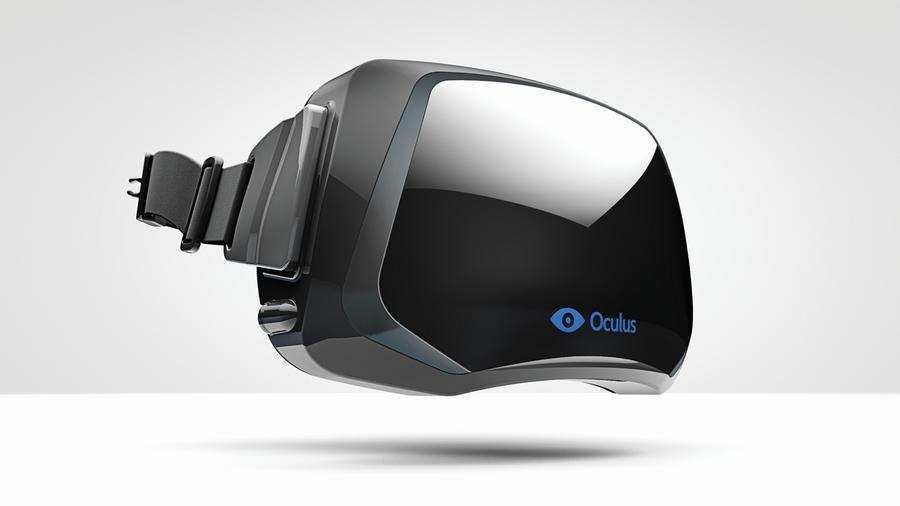

Oculus在伦敦组建VR团队
2017-01-14 14:01:50 admin 浏览数量:4496
自从2014年斥资20亿美元收购Oculus以来，Facebook作为社交平台巨头一直在VR发展的前沿。而随着市场发展，VR在美国和中国等地刮起狂潮。由此，Facebook准备扩大疆域，向英国瞄准。
根据外媒《每日电讯报》报道，Facebook近日在英国伦敦设立一个VR开发中心，成为旗下Oculus在欧洲的首个基地。
据了解，Oculus英国团队的负责人是谷歌前高级工程师Mike LeBeau，是谷歌语音搜索软件的开发者。在今年1月的时候，LeBeau前往伦敦加入Oculus。事实上，Oculus在英国一直有所动作。2015年，Oculus的干爹Facebook收购了英国VR创业公司Surreal Vision。而根据领英的信息显示，在过去6个月的时间里，Oculus在不断扩大英国的工程开发及开发者关系团队。
目前，Oculus在美国6座城市、香港以及首尔设立了办公地点，而这次再加上伦敦。对此消息，Oculus回应表示，该公司在伦敦有一支小型团队，还表示 “很快我们会公布更多的国际扩张计划。”这句话似乎意味着，Facebook准备大举扩张。